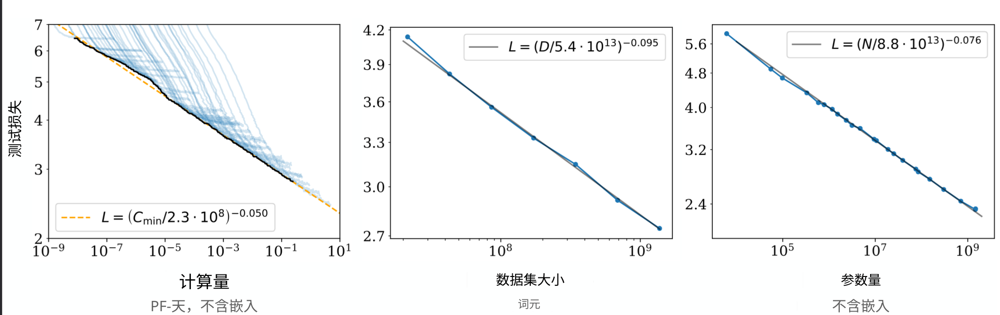
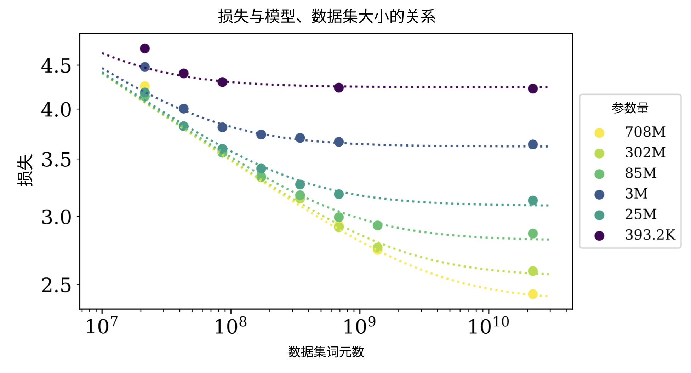
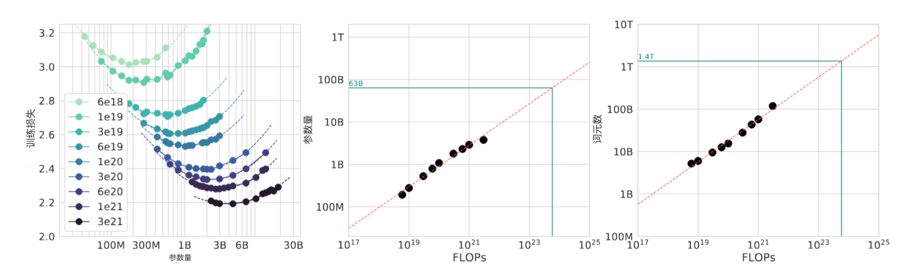
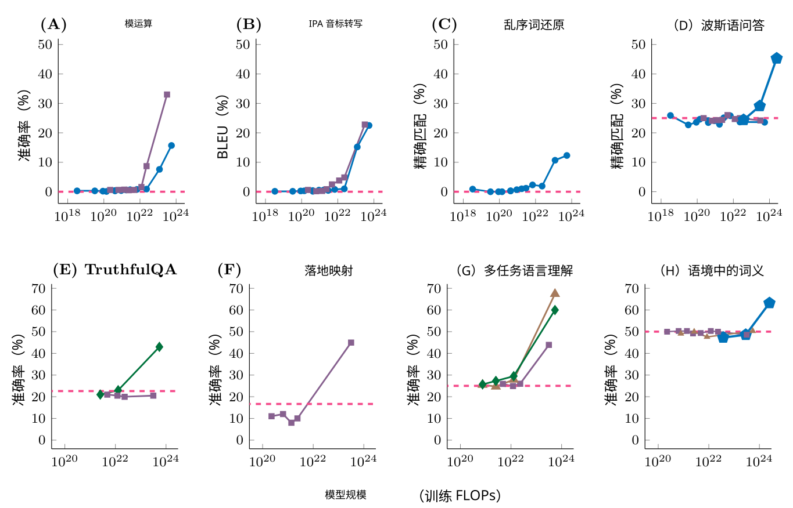
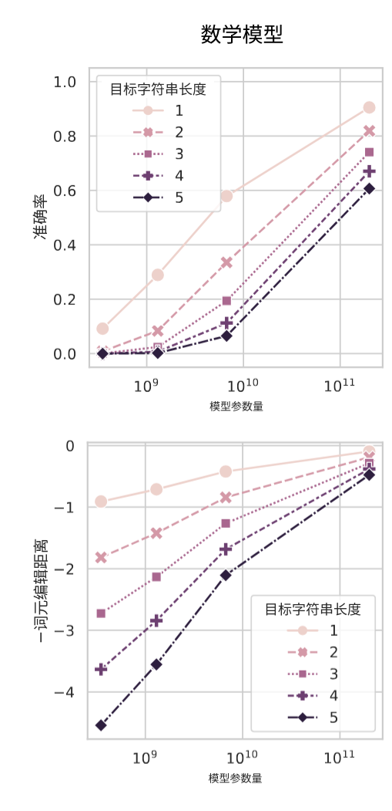
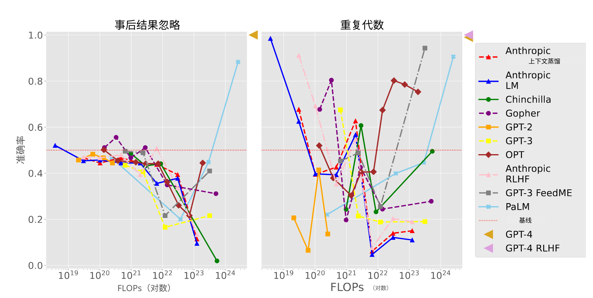
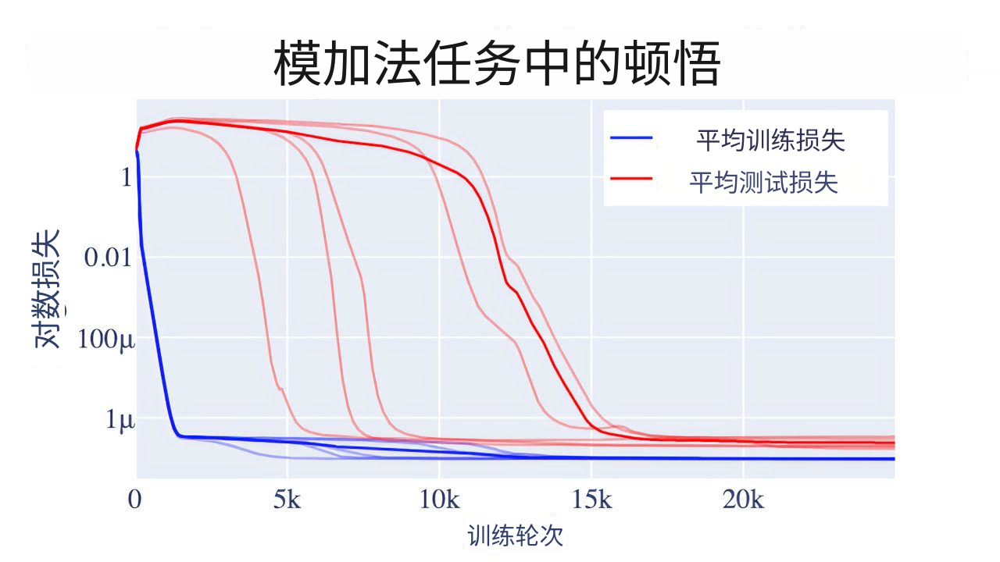
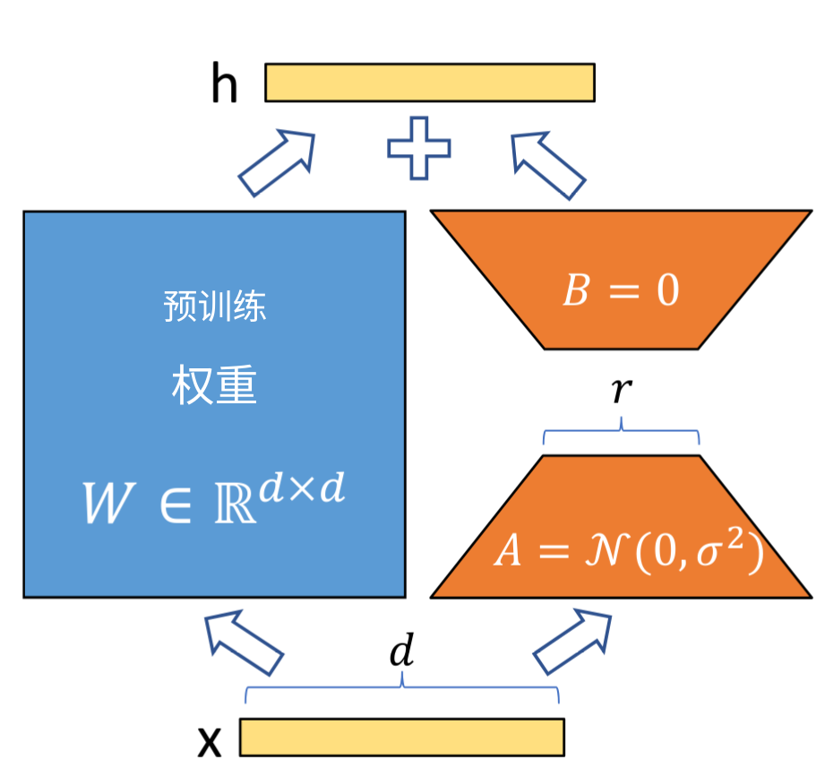
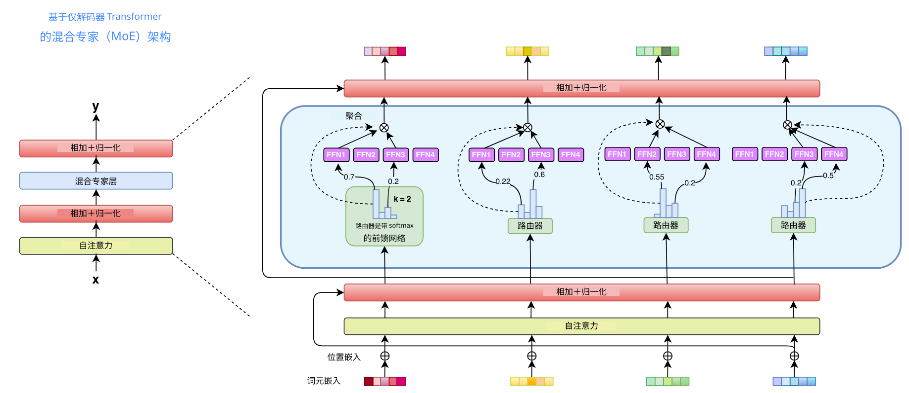

04 / 23 · 中文翻译
第 4 章 缩放定律与高效大语言模型
本章目录
4.1 缩放定律：计算、数据与参数
大语言模型训练涉及三个主要因素：（1）计算量；（2）数据集大小；（3）模型大小。研究表明，这三者与模型最终性能相关，性能以留出的测试集损失衡量（）。这种关系平滑且可预测，形式为幂律：增加三种资源中的任何一种，损失都会按该资源的某个负幂成比例下降。例如，将模型大小翻倍，可能使损失降低 倍，其中 是正指数。由于行为可预测，我们能够在投入昂贵训练之前，估计模型会改善多少（例如训练集翻倍带来的改善）。
这三个量（、、）定义如下：
- •
计算量（）：整个训练中执行的算术运算总量，以浮点运算次数（FLOPs）衡量。注意，这是运算总次数，而非每秒速率。广泛使用的近似将其与另外两个量联系为 ，因为处理一个词元时，前向传播（两次）和反向传播（四次）总共大约触及 个参数中的每个参数六次。
- •
数据集大小（）：模型训练所用词元总数。词元是词元化器定义的子词单元，因此同一语料库在不同词元化器下对应不同 值。 统计训练实际使用的词元数量。数据在多个轮次中重复使用时，重复词元仍计入 ，但相较新数据可能收益递减。
- •
模型大小（）：模型架构中可训练参数（权重）的数量。通常只计入随模型深度扩展而增加的参数，因此排除嵌入矩阵。
大型模型训练成本可观，通常达到数千万美元，并耗费长达数月的计算时间。缩放定律让我们预测模型能否训练良好。

4.1.1 Kaplan 缩放定律
通过对实证测试数据拟合函数，人们得到不同的缩放定律结果。例如，图 4.1 中每个点都是在固定数据集、类似实验设置下训练的模型，只改变三个主要变量 。2020 年初，Kaplan et al. [2020] 发现模型性能如何与 相关。他们根据实证观察估计，损失遵循与三个主要变量相关的独立幂律： 和 ，其中 和 。
这些独立幂律可合并为单个可优化方程，如公式 4.1 所示。研究者假定这种关系具有通用性，可用于刻画“其他生成式建模任务”的损失行为 [Kaplan et al., 2020, p. 5]。作者进一步表明，在除计算预算外没有其他约束时，推导会得到最优模型大小 和理想数据集大小 ，由最优步长（）和批次大小（）定义。
| (4.1) |
具体而言，他们得出：随着计算预算 增加，模型大小 应比数据大小 增长更快（ 和 11 1 ），由此推动 GPT-3 等大型模型的发展。负指数反映收益递减：模型或数据集每翻倍一次，损失仅下降几个百分点。
乍看之下，这个建议似乎与指数本身矛盾：由于 ，在计算量相同的相对增幅下，扩大数据比扩大参数更快降低损失。原因是约束在于计算，而非资源本身：由于 ，增大 与增大 都会消耗计算。这意味着 越来越可能成为瓶颈。因此，计入 的计算成本后，将额外计算分配给 比分配给 收益更好，即最优分配偏向更大模型。
样本效率
Kaplan et al. [2020] 的另一个独立观察是，大模型样本效率更高。在固定训练词元数下，大模型达到更低损失；为达到给定目标损失，它需要的词元和优化步数也少于小模型。图 4.2 展示这一效果。

4.1.2 Chinchilla 缩放定律
2022 年，Hoffmann et al. [2022] 使用名为 Chinchilla 的模型重新评估这些发现，惊讶地发现当时多数大模型严重训练不足。这一差异可追溯至 Kaplan et al. [2020] 的方法：其最优分配由许多模型早期、未收敛的训练动态外推而得，而非由训练至收敛的运行得到，因此结论系统性地偏向更大、训练步数更少的模型。
Chinchilla 研究的关键认识是，每当计算预算翻倍，模型大小 和训练词元数量 都应按大致相同比例增加（ 和 ）。其经验法则建议，每个可训练参数约训练 20 个词元，以实现计算最优。该结果后来得到复现 [Besiroglu et al., 2024]，并被证明对较大的扰动也稳健 [Schaeffer et al., 2025]。
其缩放定律将损失建模为参数数量 与已训练词元数 的函数，如下：
| (4.2) |
第一项 表示不可约损失，对应自然文本的熵。第二项 表示有限参数 模型的次优性，最后一项 表示有限训练词元数 导致的次优性。虽然这里的 与 和 Kaplan 的 与 扮演相同角色（控制损失随模型大小和数据下降的指数），但参数化不同：它们在这个双项形式内联合拟合，因此取值不同。在 400 多个模型上拟合 Chinchilla 缩放函数得到以下参数估计：
| (4.3) |
在固定计算预算 的约束下优化此损失函数（回顾 ），可以推导任意预算 对应的计算最优模型大小 和数据大小 ：
| (4.4) |
其中 是常数， 且 。
注意， 与 并非独立：根据构造有 。它直接来自 ，因为取对数得到 。写成 和 ，则变为 ；只有当 时，才对所有 成立。同一约束也适用于 Kaplan 的指数（）。Chinchilla 的不同之处，在于预算如何分配给 和 。
该规则近似线性，因为 和 随计算预算 以几乎相同速率增长：其指数 与 接近，因此在多个计算数量级间，比值 保持在约 的常数附近。最好将这一值理解为以真实计算最优训练为锚的经验校准，而非拟合系数能直接整齐推出的数字。Chinchilla 本身（700 亿参数、1.4 万亿训练词元）恰好位于 。表 4.1 展示若干著名模型与此规则的关系。低于该比值的模型训练不足（相对词元预算过大）；远高于它的模型则是刻意过度训练，以获得推断时运行廉价的小模型。GPT-3 和 Gopher 等早期旗舰模型远低于这条线（–）：模型做得很大，却只训练了相对过少的词元。需要强调， 只在固定训练预算下最小化训练损失时最优。若模型将服务大量推断请求，往往刻意按每参数远超 个词元过度训练，以额外训练成本换取推断运行更便宜的小模型。例如，LLaMA-3 8B 每参数约训练 个词元。这种刻意的极端过度训练，使小模型也能达到低损失，并在推断时廉价运行。
| 模型 | 训练状态 | |||
|---|---|---|---|---|
| Gopher [Rae et al., 2021] | 280B | 300B | 训练不足 | |
| GPT-3 [Brown et al., 2020] | 175B | 300B | 训练不足 | |
| Chinchilla [Hoffmann et al., 2022] | 70B | 1.4T | 计算最优 | |
| LLaMA-1 7B [Touvron et al., 2023a] | 7B | 1.0T | 过度训练 | |
| LLaMA-2 7B [Touvron et al., 2023b] | 7B | 2.0T | 过度训练 | |
| LLaMA-3 8B [Grattafiori et al., 2024] | 8B | 15T | 过度训练 |
到目前为止，图景相当清晰：测试损失随着计算、数据和参数增加而平滑、单调、可预测地下降。不过实践中，各种因素会影响结果。下面讨论四种分别探查这一图景不同边缘的现象：（1）计算最优曲线；（2）涌现能力；（3）逆向缩放；（4）顿悟。
4.1.3 计算最优曲线
计算机硬件和能源是有限资源。实际问题是，如何在模型大小 与数据集大小 之间分配固定计算预算 ，获得最佳模型。缩放定律通过计算最优前沿回答：即使损失最小的 分配。
图 4.3 所示的 IsoFLOP 方法 [Hoffmann et al., 2022] 通过实证确定这一前沿。对各种模型大小，选择训练词元数，使最终 FLOPs 保持不变。学习率采用余弦退火调度，余弦周期长度与目标 FLOP 数匹配。损失呈现清晰谷底，说明给定 FLOP 预算下存在最优训练模型大小（左）。利用谷底位置，可预测更大模型的最优大小和词元数（中、右）。绿色表示采用 Gopher 计算预算时最优模型的估计参数和词元数量。在固定 FLOP 预算下训练多个不同大小模型：过小的模型欠拟合，过大的模型则被迫只训练很少词元，因此损失对模型大小形成 U 形曲线。其最低点确定计算最优模型大小 ，相应词元数 由 得到。对每条曲线拟合抛物线定位最低点，在不同预算下重复，便可发现 和 如何随计算增长。
抛物线拟合必须谨慎，这种简化会使估计最优值出现系统偏差 [Czech et al., 2026]。即使在无噪声合成数据上也存在，来源有三：（1）采样模型大小间距过粗；（2）采样未能对称包围真实最低点；（3）损失面的真实不对称性无法由对称抛物线表示。他们估计，在 Llama-3 规模下，这些偏差浪费约 140 万美元计算。补救建议是，采用数值稳健的优化器直接拟合参数化损失模型 ，即 Chinchilla 方法 3，也是上述推导 规则的形式，而不要从拟合抛物线读取最优值。
另一种补充视角 [Paquette et al., 2024] 不对训练模型拟合曲线，而研究解析可解模型（使用单遍随机梯度下降训练的幂律随机特征）。他们发现计算最优指数不是唯一的普适常数，数据复杂性／目标复杂性平面会划分为四个主要相区（另有三个子相区），各有控制 随计算增长的指数。应采用哪种分配规则，甚至固定每参数 20 个词元的形式是否正确，都取决于问题所处的区域。

微调的缩放
前述工作研究预训练如何缩放。这些定律是否也支配微调？Zhang et al. [2024] 同时研究更新所有权重的全模型微调，以及冻结预训练权重、只训练少量新增参数（例如 LoRA）的参数高效微调（PEFT）[Hu et al., 2021]。对计算预算最相关的结论是，扩大基础模型规模，比收集额外微调数据更能改善微调性能，而增加可训练 PEFT 参数帮助很小。实践中，任务表现不佳时，通常选择更大的预训练模型，比扩大适配器或收集更多微调样例更有效。
4.1.4 涌现能力
大语言模型缩放中最有趣的现象之一是涌现能力：小模型没有的能力，在模型大小或计算量越过阈值时突然出现 [Wei et al., 2022]。例如多步推理、少样本翻译和专门编程任务，见图 4.4。若模型通过少样本提示执行某任务时，在一定规模前只有随机表现，之后性能显著上升、远高于随机水平，就称此能力为涌现。

不过，出现的突然性受到质疑。Schaeffer et al. [2023] 认为，涌现能力可能是评价指标选择造成的幻象。例如图 4.5 中，不平滑的离散指标（如准确率或精确匹配）呈现骤然跳升——毕竟它们本来就不平滑——而底层指标（如交叉熵损失或词元级概率）在不同规模间遵循平滑可预测的幂律。

4.1.5 逆向缩放
多数任务随规模提升，但有些呈现逆向缩放：模型越大表现越差，或偏见越强。如果按照语言建模目标，干扰答案比正确答案概率更高，就可能发生这种情况，导致更大（更自信）的模型持续选错 [McKenzie et al., 2023, Michaelov and Bergen, 2023]。
逆向缩放的一个例子是事后结果忽略任务，测试能否根据期望值判断一项赌注是否值得下注。期望值为正时应回答“是”，为负时应回答“否”。具体情境是：模型只看到实际结果始终与期望值一致的少样本示例（正期望时赢了钱，负期望时输了钱），然后回答期望值与实际结果不一致时，下注是否正确。该任务测试在少样本示例标签正确但有误导性时，模型能否从指令正确泛化。重复代数任务则测试，在给定特定模式、标签正确的少样本示例时，模型如何回答简单代数问题。图 4.6 显示，模型一般从随机水平开始，但在训练 FLOPs 约为 时跌至随机水平以下。

4.1.6 顿悟（Grokking）
顿悟是统计学习理论中一个较新的悖论。传统理论认为，向大模型提供小数据集，会因记忆样例而过拟合。然而，若继续训练这个过大的模型，经过更多训练之后，它会突然找到可泛化的解，这就是顿悟 [Power et al., 2022]。
顿悟最初见于模加法等小型算法任务，表明即使不增大数据集，增加训练步数（过度训练）也可能使模型从记忆质变为理解 ，见图 4.7。

图中显示，数据耗尽形成的数据墙起初限制扩展 [Villalobos et al., 2024]，但经过远更多训练，模型随后顿悟出可泛化的解。
顿悟与语言建模相关，因为互联网上高质量人类文本正在迅速耗尽，难以满足下一代模型 Chinchilla 缩放对数据 的需求。由于这些固有限制，研究者不再只简单扩展 ，而探索新前沿：（1）更高架构效率（如混合专家）；（2）推断时扩展（如 OpenAI o 系列在推断时给模型更多计算来思考）；（3）合成数据生成（第 19 章）。
4.2 小语言模型
随着计算与数据需求持续增长，人们日益关注小语言模型（SLM）：规模足够小，能在消费级硬件甚至移动或边缘设备上运行，同时保持高性能。这些模型通常通过优化效率、不过多牺牲性能的技术开发。
要理解这些模型的部署环境，可以将常见计算基础设施分为：
- •
数据中心：高性能 GPU（如 NVIDIA H100）和 TPU，主要用于大模型预训练及托管高吞吐量推断 API。
- •
消费级硬件：标准桌面 GPU 和高端 CPU，个人用户能够以可负担成本本地微调或运行小语言模型。
- •
边缘设备：手机、物联网设备和笔记本电脑，越来越多配备专门为低功耗、高效端侧推断设计的神经处理单元（NPU）。
为让模型适应后两类受限环境，优化技术关注提高吞吐量、降低延迟、减少内存使用和提升样本效率。这些技术分为两类：（1）以模型为中心的优化，针对模型架构及优化方法；（2）以数据为中心的优化，针对训练数据。下面讨论两者。
4.2.1 以模型为中心的优化
首先讨论以模型为中心的技术。以下技术允许高效训练较小模型，同时保持较高任务性能，可针对预训练／微调或推断。
4.2.1.1 降低预训练成本
参数高效微调（PEFT）
低秩适配（LoRA）[Hu et al., 2021] 等方法，仅训练极小部分参数（通常为 %），便能使大模型适应新任务 [Lialin et al., 2023]。关键观察是，微调学得的权重更新具有较低内在秩：尽管预训练权重矩阵 满秩，使其适应新任务所需的变化 却可由低秩矩阵很好地近似。LoRA 不直接更新 ，而是冻结它，将更新表示为两个小矩阵的乘积，
| (4.5) |
其中秩 。对于输入 ，修改后的前向传播变为
| (4.6) |
其中 是控制更新幅度的固定缩放因子，大致类似标准训练的学习率。图 4.8 展示这一过程。只计算 和 的权重更新，将可训练参数数目从 降为 。初始化时， 从随机高斯分布采样， 设为零，因此 ，训练从预训练模型开始。训练后 可直接合并回 ，因此 LoRA 不增加推断延迟，同一基础模型可搭配多个小型、可互换的任务专用适配器提供服务。

架构创新
第二类技术改变模型架构本身，使运行更便宜，而非事后压缩固定架构。两个有影响的例子是分组查询注意力和混合专家。
分组查询注意力（GQA）[Ainslie et al., 2023] 针对自回归解码的内存带宽瓶颈。标准多头注意力（MHA）中，每个查询头都有自己的键和值矩阵，计算注意力分数时都要使用。另一极端是多查询注意力（MQA），所有查询头共享单个键／值头，减少计算但可能损害表达质量与训练稳定性。GQA 介于二者之间：查询头分为 组，每组共享一个键／值头。 时等同 MQA， 等于头数时等同 MHA，因此 在质量与内存之间进行权衡。GQA 常与接下来第 4.2 节的 KV 缓存优化结合，现已成为许多开放权重模型的默认注意力变体。
混合专家（MoE）[Shazeer et al., 2017] 将总参数数目与每词元消耗的计算解耦。每层不再只有一个稠密前馈块，而是包含许多并行的“专家”子网络，以及轻量级门控网络（路由器），为每个词元仅激活少量专家（通常为 top- 或 ）。由于只有选中专家执行计算，即使总参数数目（以及整体容量）增加一个或更多数量级，每词元成本仍接近单个稠密块 [Fedus et al., 2022]。
正因这种稀疏激活，Mixtral 及许多近期前沿系统可拥有数千亿总参数，却为每个词元只激活其中一部分。代价是：（1）所有专家仍须驻留内存；（2）须在专家之间平衡负载（通常借助辅助损失），避免过度或不足使用；（3）路由增加工程复杂性。图 4.9 展示 MoE 架构，使用配置为 的 top- 路由机制，门控函数根据路由器为每个词元选择得分最高的两个 FFN 专家。选中的专家并行计算，其输出加权求和汇总 [Zhang et al., 2025]。

知识蒸馏
使用大型教师模型训练较小学生模型，鼓励学生匹配教师的输出分布 [Gu et al., 2023, Xu et al., 2024]。关键是，学生学习教师完整的软概率（通常用温度软化），而非仅学习单个正确答案。软目标携带更丰富信息，例如教师认为哪些错误答案也合理。这使学生以教师规模的一小部分接近其质量。同一思想也支撑下面讨论的合成数据生成：前沿模型实际充当教师，为较小学生生成高质量训练数据。
4.2.1.2 降低推断成本
模型训练后还可针对推断部署进一步优化。训练时技术关注降低生产模型的成本，推断时技术关注使用成本：吞吐量（每秒生成词元数）、延迟（首词元和后续各词元所需时间），以及服务请求所需的内存占用。下面讨论几种常见降低推断成本的技术，大小模型均可采用。
键—值（KV）缓存
自回归生成时，模型一次产生一个词元，每个新词元关注所有先前词元。每一步都为整个上下文重新计算注意力键和值，成本呈平方增长。不过，预测新词元时原有上下文不变，因此可将过去词元的键和值向量存入 KV 缓存并复用，而非重新计算。这将每步注意力变为线性成本的查询，是使解码实用的基本优化，但缓存随序列长度和批次大小线性增长，很快成为长上下文内存使用的主要部分。该问题促成上述架构选择（GQA 与 MQA 通过查询头共享键／值头缩小缓存），以及 PagedAttention 等专门内存管理方案，将缓存存入非连续块，减少碎片并提高服务吞吐量 [Kwon et al., 2023]。
剪枝
更激进的缩小模型方法，是考虑移除神经网络中冗余或较不重要的连接 [Ma et al., 2023]。剪枝可以是非结构化的（将单个权重置零），也可以是结构化的（移除完整神经元、注意力头或层）；后者在标准硬件上可带来实际加速，前者则需支持稀疏性的内核才能兑现收益。
量化
推断时节省内存的另一方法是缩小需载入内存的矩阵。除了减小矩阵维度，还可降低权重元素精度（例如从 16 位降为 8 位或 4 位数字），显著减少内存并加快推断。不过，原则上精度越低，性能越低。同一思想也可用于 KV 缓存本身，以在内存中保留长上下文。量化是一种常用方法 [Dettmers et al., 2022, Dettmers and Zettlemoyer, 2023, Xiao et al., 2023]。
另一种方案不是将全部权重转换为相同精度，而是采用混合精度模式，对不同计算部分采用不同数值精度，平衡速度与稳定性 [Micikevicius et al., 2017]。这种方法可能因数值不稳定而产生非确定结果 [Yuan et al., 2025]。
推测解码
优化推断效率的一项关键技术是推测解码 [Leviathan et al., 2023]。它用小型草稿模型快速生成多个词元，再由更大目标模型并行验证。这样可加快推断（最高约 2–3 倍），而不牺牲大模型质量，有效利用缩放曲线上的不同点。
4.2.2 以数据为中心的优化
除模型中心方法外，文献强调，训练高效模型时，数据质量和整理往往比数据集规模更重要 [Luo et al., 2025]。小模型若在高度精选的高质量数据上训练，也能表现良好。因此，除高效架构外，良好数据配方同样重要。数据中心技术大致分为两类：从更大数据池中选择最有用部分，以及在优质数据稀缺时生成新的合成数据。
4.2.2.1 数据选择与整理
越来越多工作表明，与其使用所有可用文本，不如精心选择训练哪些数据及其比例，在相同计算预算下可得到更好模型。预训练方面，NVIDIA 的 CLIMB 框架 [Diao et al., 2026] 将大型语料嵌入语义空间、聚类，再迭代搜索使代理模型损失最小的数据混合。由此得到的 ClimbMix 数据集（4000 亿词元）使一个不足十亿参数的模型，胜过在规模大得多但未筛选语料上训练的同类模型。微调阶段也适用同一原则：LIMA [Zhou et al., 2023] 表明，只用 对精心整理的提示—回答进行监督微调，就足以产生强大的指令遵循模型，支持“大多数知识在预训练中获得，对齐主要教授期望回答风格”的观点。
4.2.2.2 获取合成数据
没有合适数据时，可以生成数据。Microsoft Phi 系列 [Gunasekar et al., 2023] 等采用的 Textbooks Are All You Need（教材即所需全部）方法表明，在干净、合成的教材质量数据上训练，可使仅 13 亿参数的较小模型胜过十倍规模的模型。
此类流水线通常依靠前沿模型生成数据，再用“大语言模型作评委”评分筛出最准确、最具教育价值的样例，并严格去污染，确保合成数据不泄漏基准测试集、虚增报告性能。这对推理数据尤其有价值：在较大模型产生的逐步推理轨迹上训练，可将复杂问题解决技能蒸馏到较小架构中（另见第 6 章）[Muennighoff et al., 2025, Arora and Zanette, 2026]。
4.2.2.3 样本高效学习
除合成数据外，研究也日益关注模型如何从有限的自然数据中更高效学习。BabyLM Challenge [Warstadt et al., 2023] 等项目关注严格数据约束下的模型训练（例如 1000 万至 1 亿词元）。这模拟儿童早期发育所接收的语言输入量，推动样本高效架构创新，同时帮助理解认知上合理的语言习得。
4.2.3 流行模型
概览改进技术之后，可考察流行的大小模型如何在实践中应用。模型通常按开放性分类：封闭权重（专有）模型只开放 API，开放权重模型发布训练参数，开源模型还分享训练数据和代码。实践中，开放性是程度问题，而非严格类别，因此可用开放指数评价透明度 [Artificial Analysis, 2026]。多数开放模型可在 Hugging Face 等仓库找到。
下面简要介绍一些流行的开放权重模型，以及它们为实现足够高效、可在消费级硬件运行而采用的技术。这不是穷尽列表，而是选取撰写时有影响力、体现效率技术及规模趋势的模型。
- Phi 系列
-
[Abdin et al., 2024]。Phi 系列是能力较强、效率足以在移动设备本地运行的小语言模型。核心创新是以数据为中心的训练方法。Microsoft 整理高质量、严格筛选的网页数据，并结合更大模型生成的合成数据。这使小模型（例如 38 亿参数的 Phi-3-mini）表现出色，推理能力可与 GPT-3.5、Mixtral 等大得多的模型匹敌。
- Gemma 系列
-
[Mesnard et al., 2024] Google 强调，Gemma 继承 Gemini 强大的通用能力，尤其在文本、推理和编程方面，同时推进相应规模类别的最先进水平，但其训练方法和数据鲜为人知。
- OLMo 家族
-
[Ettinger et al., 2025] OLMo（Open Language Model）家族由 Allen Institute for AI 开发，目标是完全开源。项目开放整个训练流水线，包括代码和数据：预训练数据集 Dolma、训练与评估代码、训练日志和中间检查点。这种透明度使研究者能够研究训练动态、数据影响和算法偏见。
- Qwen 系列
-
[Bai et al., 2023] Qwen 家族是一套高性能基础及指令微调模型，从不足十亿参数的稠密模型到大型混合专家（MoE）架构不等，以多语言能力及数学、编程和逻辑推理基准表现著称。
- OpenELM
-
[Mehta et al., 2024] Apple 的 Efficient Language Model 家族旨在边缘设备上高效运行。其逐层缩放策略在靠近输入的层使用较小潜在维度，越靠近输出越宽，使较低参数数量也能获得高准确率。
- gpt-oss
-
[Agarwal et al., 2025] OpenAI 发布了两个采用高效混合专家架构、针对智能体能力优化的开放权重推理模型。
- Mixtral 系列
-
[Jiang et al., 2024] 这些模型在开放权重生态中推广了稀疏混合专家（SMoE）架构（例如 Mixtral 8x7B），总参数量大，推断时激活参数少，从而最大化效率。
- Llama 系列
-
[Grattafiori et al., 2024] Meta 的 Llama 模型已被广泛使用。在大型数据集上训练（Llama 3 高达 15 万亿词元），规模从适合边缘设备的小型模型到 4050 亿参数的前沿模型，确立了开放模型缩放定律的标准，并催生微调模型及衍生模型生态。
- DeepSeek
-
[Liu et al., 2025] DeepSeek-V3 是大型混合专家模型（总计 6710 亿参数，每词元激活 370 亿），以训练稳定性著称。它结合用于压缩键值缓存的多头潜在注意力（MLA）与无辅助损失的专家负载平衡策略，并采用 FP8 混合精度训练，以较低计算成本达到前沿性能。该系列还包括 DeepSeek-R1 推理模型。
- GLM
-
[Zeng et al., 2026] 智谱 AI 开发的 GLM（General Language Model）家族，在训练早期建立强大推理能力，并在整个训练过程中保留。近期版本针对智能体工作流和软件工程优化，关注工具使用与代码生成，而非仅文本补全。
- Pythia
-
[Biderman et al., 2023] EleutherAI 的 Pythia 是支持训练动态和缩放研究的模型套件（7000 万至 120 亿参数）。每个模型都按同样顺序使用同样数据训练，并发布中间检查点，使研究者能受控研究能力、记忆与偏见如何在训练过程中涌现。
- BLOOM
-
[Scao et al., 2023] BLOOM 是 BigScience 合作研究计划产生的 1760 亿参数开放访问模型。在涵盖 46 种自然语言和 13 种编程语言的 ROOTS 语料库上训练，是首批优先考虑多语言覆盖与全面开放的大规模模型之一，以 Responsible AI License 发布。
- SmolLM
-
[Allal et al., 2025] Hugging Face 的 SmolLM 是紧凑模型家族（1.35 亿、3.6 亿及 17 亿参数），与 Phi 类似，面向高效端侧部署。性能源于数据整理：训练使用 SmolLM-Corpus，结合高质量网页数据、Python 代码样例，以及（由 Mixtral）合成的教材和故事。
4.3 推断时计算
传统缩放定律关注训练时计算与性能的关系。近期研究将部分计算负担移到推断阶段，即推断时扩展（或测试时计算）[Muennighoff et al., 2025]。不将所有计算都花在训练上，而允许模型在推断时更长时间地思考，以生成词元数或探索推理路径数衡量，产出更高质量答案。因此，优化吞吐量（词元／秒）至关重要：词元产生越快，模型在相同时间内能够做的推理越多。
按词元增加推断时预算，可显著改善能力 [Du et al., 2024]；近期研究表明，最优分配测试时计算，能让较小模型在困难推理任务上胜过更大模型 [Snell et al., 2024]。不过收益并无保证，取决于任务和具体搜索或验证策略 [Stechly et al., 2023]。除性能外，这一转变也重新提出“大语言模型究竟是什么系统”的更广问题，第 6 章将详细探讨。
4.4 可持续语言模型
大语言模型的大规模训练与部署具有重大环境及经济影响。人工智能训练和推断耗能巨大，随之而来的冷却用水也给供水管道带来压力 [Li et al., 2025, Jegham et al., 2025]。训练能耗与碳足迹测量最近才纳入标准报告 [Ding and Shi, 2024]。据报道，训练单个大模型的能耗可相当于数百户家庭一年的用量。将动态耗电与硬件制造隐含碳排放均计入时，训练 BLOOM 这样的模型排放超过 50 吨二氧化碳当量 [Luccioni et al., 2023]。
随着大语言模型在科学和社会中的使用增加，推断而非训练越来越主导总碳足迹，尤其是每天由数百万人使用的模型 [Özcan et al., 2025, Wu et al., 2022, Samsi et al., 2023]。这也创造机会：在训练期间花费更多计算，生成更小、更高效的模型（见第 4.1 节），可显著降低部署的长期环境成本。
全球推断需求扩展到每天数十亿查询时，累计能耗及相关财务成本会超过最初训练投入 [Faiz et al., 2024]。如此规模部署大模型，需要庞大的数据中心基础设施，以及大量电力和水。因此，人们大力推动部署小语言模型（SLM），实现可持续的大规模使用。通过减少参数和量化位数，小语言模型降低每生成词元的内存带宽与计算需求，提供更环保、经济上更可行的方案。
隐私与数据泄漏
除环境问题外，通过云 API 集中提供大语言模型也引入隐私漏洞。用户查询云模型时，敏感个人数据、公司知识产权或受保护健康信息必须传至第三方服务器。这会造成数据泄漏风险 [Aiyappa et al., 2023, Li et al., 2024]，可能来自未授权拦截、对抗提取攻击，或模型无意记住用户私密提示并随后复述 [Chen et al., 2024, Maini et al., 2024, Liu et al., 2022]。
为减轻这些隐私风险并减少对云基础设施的依赖，开发者可从基于 API 的推断转向本地端侧推断 [Qu et al., 2025]：
- •
基于 API 的推断：依赖强大的远程服务器。虽然可访问数千亿参数的前沿模型，但存在网络延迟、需要持续联网，并且必然向云提供商暴露用户数据。
- •
本地推断：直接在用户硬件（如手机、笔记本电脑或边缘服务器）运行模型。提示不离开设备，因而保障数据隐私，同时消除网络延迟并确保离线可用。
本地推断受消费级与边缘硬件的物理限制。例如内存与带宽有限。大语言模型推断是内存受限过程：保存模型权重需要大量 RAM，生成词元需要高内存带宽。此外，多数移动设备由电池供电。在移动设备或普通笔记本上运行密集矩阵乘法，可能迅速耗电并引发热降频。
为使本地部署可行，开发者须依靠量化（如 4 位）、推测解码等推断时优化技术，并利用日益普及、专为低功耗边缘 AI 设计的神经处理单元（NPU）。
4.5 结语
随着大语言模型使用日益普遍、快速响应需求增加，开发重点正在转向更高效的解决方案。因此，单纯为原始性能扩展数据、计算和模型大小的关注，正在转向为效率而扩展。
基础幂律依然成立，但重点已从训练尽可能大的模型，转向计算最优训练、推断时扩展，以及开发能在消费级和边缘硬件上运行、能力出色的小模型。
本章讨论的方向彼此互补，而非竞争：模型中心技术（LoRA、GQA、MoE、量化、蒸馏）与数据中心技术（谨慎的数据选择及合成生成）越来越多地结合于同一训练配方。
随着接近数据墙，合成数据和架构效率的重要性很可能继续增加，以更少资源完成更多工作正成为研究重点。
参考文献
- Phi-3 technical report: a highly capable language model locally on your phone. External Links: 2404.14219, Link Cited by: item Phi series.
- Gpt-oss-120b & gpt-oss-20b model card. External Links: 2508.10925, Link Cited by: item gpt-oss.
- GQA: training generalized multi-query transformer models from multi-head checkpoints. In Proceedings of the 2023 Conference on Empirical Methods in Natural Language Processing, H. Bouamor, J. Pino, and K. Bali (Eds.), Singapore, pp. 4895–4901. External Links: Link, Document Cited by: §4.2.1.1.
- Can we trust the evaluation on ChatGPT?. In Proceedings of the 3rd Workshop on Trustworthy Natural Language Processing (TrustNLP 2023), A. Ovalle, K. Chang, N. Mehrabi, Y. Pruksachatkun, A. Galystan, J. Dhamala, A. Verma, T. Cao, A. Kumar, and R. Gupta (Eds.), Toronto, Canada, pp. 47–54. External Links: Link, Document Cited by: §4.4.
- SmolLM2: when smol goes big — data-centric training of a fully open small language model. In Second Conference on Language Modeling, External Links: Link Cited by: item SmolLM.
- Training language models to reason efficiently. Advances in Neural Information Processing Systems 38, pp. 60770–60808. Cited by: §4.2.2.2.
- Artificial analysis openness index. Note: Accessed: 2026-03-16 External Links: Link Cited by: §4.2.3.
- Qwen technical report. External Links: 2309.16609, Link Cited by: item Qwen series.
- Chinchilla scaling: a replication attempt. arXiv preprint arXiv:2404.10102. Cited by: §4.1.2.
- Pythia: a suite for analyzing large language models across training and scaling. In International Conference on Machine Learning, pp. 2397–2430. Cited by: item Pythia.
- Language models are few-shot learners. Advances in neural information processing systems 33, pp. 1877–1901. Cited by: 表 4.1.
- The janus interface: how fine-tuning in large language models amplifies the privacy risks. In Proceedings of the 2024 on ACM SIGSAC Conference on Computer and Communications Security, pp. 1285–1299. Cited by: §4.4.
- Problems with chinchilla approach 2: systematic biases in isoflop parabola fits. External Links: 2603.22339, Link Cited by: §4.1.3.
- GPT3.int8(): 8-bit matrix multiplication for transformers at scale. In Advances in Neural Information Processing Systems, S. Koyejo, S. Mohamed, A. Agarwal, D. Belgrave, K. Cho, and A. Oh (Eds.), Vol. 35, pp. 30318–30332. External Links: Link Cited by: §4.2.1.2.
- The case for 4-bit precision: k-bit inference scaling laws. In Proceedings of the 40th International Conference on Machine Learning, A. Krause, E. Brunskill, K. Cho, B. Engelhardt, S. Sabato, and J. Scarlett (Eds.), Proceedings of Machine Learning Research, Vol. 202, pp. 7750–7774. External Links: Link Cited by: §4.2.1.2.
- Nemotron-climb: clustering-based iterative data mixture bootstrapping for language model pre-training. Advances in Neural Information Processing Systems 38. Cited by: §4.2.2.1.
- Sustainable llm serving: environmental implications, challenges, and opportunities. In 2024 IEEE 15th International Green and Sustainable Computing Conference (IGSC), pp. 37–38. Cited by: §4.4.
- Improving factuality and reasoning in language models through multiagent debate. In Proceedings of the 41st International Conference on Machine Learning, ICML’24. Cited by: §4.3.
- Olmo 3. External Links: 2512.13961, Link Cited by: item OLMo family.
- LLMCarbon: modeling the end-to-end carbon footprint of large language models. In International Conference on Learning Representations, B. Kim, Y. Yue, S. Chaudhuri, K. Fragkiadaki, M. Khan, and Y. Sun (Eds.), Vol. 2024, pp. 24727–24741. External Links: Link Cited by: §4.4.
- Switch transformers: scaling to trillion parameter models with simple and efficient sparsity. Journal of Machine Learning Research 23 (120), pp. 1–39. External Links: Link Cited by: §4.2.1.1.
- The llama 3 herd of models. External Links: 2407.21783, Link Cited by: item Llama series, 表 4.1.
- MiniLLM: knowledge distillation of large language models. In The Twelfth International Conference on Learning Representations, Cited by: §4.2.1.1.
- Textbooks are all you need. External Links: 2306.11644, Link Cited by: §4.2.2.2.
- Training compute-optimal large language models. In Proceedings of the 36th International Conference on Neural Information Processing Systems, NIPS ’22, Red Hook, NY, USA. External Links: ISBN 9781713871088 Cited by: 图 4.3, 图 4.3, §4.1.2, §4.1.3, 表 4.1.
- Lora: low-rank adaptation of large language models. arXiv preprint arXiv:2106.09685. Cited by: 图 4.8, 图 4.8, §4.1.3, §4.2.1.1.
- How hungry is ai? benchmarking energy, water, and carbon footprint of llm inference. External Links: 2505.09598, Link Cited by: §4.4.
- Mixtral of experts. External Links: 2401.04088, Link Cited by: item Mixtral series.
- Scaling laws for neural language models. External Links: 2001.08361, Link Cited by: 图 4.1, 图 4.1, 图 4.2, 图 4.2, §4.1.1, §4.1.1, §4.1.1, §4.1.2.
- Efficient memory management for large language model serving with pagedattention. In Proceedings of the 29th Symposium on Operating Systems Principles, SOSP ’23, New York, NY, USA, pp. 611–626. External Links: ISBN 9798400702297, Link, Document Cited by: §4.2.1.2.
- Fast inference from transformers via speculative decoding. In International Conference on Machine Learning, pp. 19274–19286. Cited by: §4.2.1.2.
- Making ai less ’thirsty’. Commun. ACM 68 (7), pp. 54–61. External Links: ISSN 0001-0782, Link, Document Cited by: §4.4.
- An open source data contamination report for large language models. External Links: 2310.17589, Link Cited by: §4.4.
- Scaling down to scale up: a guide to parameter-efficient fine-tuning. arXiv preprint arXiv:2303.15647. Cited by: §4.2.1.1.
- DeepSeek-v3 technical report. External Links: 2412.19437, Link Cited by: item DeepSeek.
- Membership inference attacks against machine learning models via prediction sensitivity. IEEE Transactions on Dependable and Secure Computing 20 (3), pp. 2341–2347. Cited by: §4.4.
- Estimating the carbon footprint of bloom, a 176b parameter language model. Journal of Machine Learning Research 24 (253), pp. 1–15. External Links: Link Cited by: §4.4.
- A survey on efficient large language model training: from data-centric perspectives. In Proceedings of the 63rd Annual Meeting of the Association for Computational Linguistics (Volume 1: Long Papers), W. Che, J. Nabende, E. Shutova, and M. T. Pilehvar (Eds.), Vienna, Austria, pp. 30904–30920. External Links: Link, Document, ISBN 979-8-89176-251-0 Cited by: §4.2.2.
- Llm-pruner: on the structural pruning of large language models. Advances in neural information processing systems 36, pp. 21702–21720. Cited by: §4.2.1.2.
- LLM dataset inference: did you train on my dataset?. Advances in Neural Information Processing Systems 37, pp. 124069–124092. Cited by: §4.4.
- Inverse scaling: when bigger isn’t better. Transactions on Machine Learning Research. Note: Featured Certification External Links: ISSN 2835-8856, Link Cited by: 图 4.6, 图 4.6, §4.1.5.
- OpenELM: an efficient language model family with open training and inference framework. External Links: 2404.14619, Link Cited by: item OpenELM.
- Gemma: open models based on gemini research and technology. External Links: 2403.08295, Link Cited by: item Gemma series.
- Emergent inabilities? inverse scaling over the course of pretraining. In Findings of the Association for Computational Linguistics: EMNLP 2023, H. Bouamor, J. Pino, and K. Bali (Eds.), Singapore, pp. 14607–14615. External Links: Link, Document Cited by: §4.1.5.
- Mixed precision training. arXiv preprint arXiv:1710.03740. Cited by: §4.2.1.2.
- S1: simple test-time scaling. arXiv preprint arXiv:2501.19393. Cited by: §4.2.2.2, §4.3.
- Progress measures for grokking via mechanistic interpretability. arXiv preprint arXiv:2301.05217. Cited by: 图 4.7, 图 4.7.
- Quantifying the energy consumption and carbon emissions of llm inference via simulations. arXiv preprint arXiv:2507.11417. Cited by: §4.4.
- 4+3 phases of compute-optimal neural scaling laws. In The Thirty-eighth Annual Conference on Neural Information Processing Systems, External Links: Link Cited by: §4.1.3.
- Grokking: generalization beyond overfitting on small algorithmic datasets. External Links: 2201.02177, Link Cited by: §4.1.6.
- Mobile edge intelligence for large language models: a contemporary survey. IEEE Communications Surveys & Tutorials 27 (6), pp. 3820–3860. Cited by: §4.4.
- Scaling language models: methods, analysis & insights from training gopher. arXiv preprint arXiv:2112.11446. Cited by: 表 4.1.
- From words to watts: benchmarking the energy costs of large language model inference. In 2023 IEEE high performance extreme computing conference (HPEC), pp. 1–9. Cited by: §4.4.
- BLOOM: a 176b-parameter open-access multilingual language model. External Links: 2211.05100, Link Cited by: item BLOOM.
- Evaluating the robustness of chinchilla compute-optimal scaling. arXiv preprint arXiv:2509.23963. Cited by: §4.1.2.
- Are emergent abilities of large language models a mirage?. Advances in neural information processing systems 36, pp. 55565–55581. Cited by: 图 4.5, 图 4.5, §4.1.4.
- Outrageously large neural networks: the sparsely-gated mixture-of-experts layer. External Links: 1701.06538, Link Cited by: §4.2.1.1.
- Scaling llm test-time compute optimally can be more effective than scaling model parameters. arXiv preprint arXiv:2408.03314. Cited by: §4.3.
- GPT-4 doesn’t know it’s wrong: an analysis of iterative prompting for reasoning problems. In NeurIPS 2023 Foundation Models for Decision Making Workshop, External Links: Link Cited by: §4.3.
- LLaMA: open and efficient foundation language models. External Links: 2302.13971, Link Cited by: 表 4.1.
- Llama 2: open foundation and fine-tuned chat models. arXiv preprint arXiv:2307.09288. Cited by: 表 4.1.
- Position: will we run out of data? limits of LLM scaling based on human-generated data. In Forty-first International Conference on Machine Learning, External Links: Link Cited by: §4.1.6.
- Findings of the BabyLM challenge: sample-efficient pretraining on developmentally plausible corpora. In Proceedings of the BabyLM Challenge at the 27th Conference on Computational Natural Language Learning, A. Warstadt, A. Mueller, L. Choshen, E. Wilcox, C. Zhuang, J. Ciro, R. Mosquera, B. Paranjabe, A. Williams, T. Linzen, and R. Cotterell (Eds.), Singapore, pp. 1–34. External Links: Link, Document Cited by: §4.2.2.3.
- Emergent abilities of large language models. arXiv preprint arXiv:2206.07682. Cited by: 图 4.4, 图 4.4, §4.1.4.
- Sustainable ai: environmental implications, challenges and opportunities. In Proceedings of Machine Learning and Systems, D. Marculescu, Y. Chi, and C. Wu (Eds.), Vol. 4, pp. 795–813. External Links: Link Cited by: §4.4.
- SmoothQuant: accurate and efficient post-training quantization for large language models. In Proceedings of the 40th International Conference on Machine Learning, A. Krause, E. Brunskill, K. Cho, B. Engelhardt, S. Sabato, and J. Scarlett (Eds.), Proceedings of Machine Learning Research, Vol. 202, pp. 38087–38099. External Links: Link Cited by: §4.2.1.2.
- A survey on knowledge distillation of large language models. arXiv preprint arXiv:2402.13116. Cited by: §4.2.1.1.
- Understanding and mitigating numerical sources of nondeterminism in LLM inference. In The Thirty-ninth Annual Conference on Neural Information Processing Systems, External Links: Link Cited by: §4.2.1.2.
- GLM-5: from vibe coding to agentic engineering. External Links: 2602.15763, Link Cited by: item GLM.
- When scaling meets LLM finetuning: the effect of data, model and finetuning method. In The Twelfth International Conference on Learning Representations, External Links: Link Cited by: §4.1.3.
- Mixture of experts in large language models. External Links: 2507.11181, Link Cited by: 图 4.9, 图 4.9, §4.2.1.1.
- Lima: less is more for alignment. Advances in Neural Information Processing Systems 36, pp. 55006–55021. Cited by: §4.2.2.1.